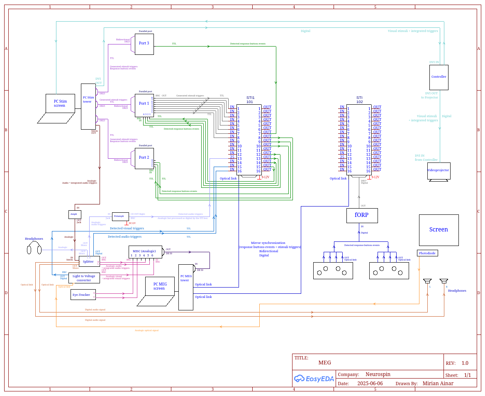

2. Verifying the Performance of an Arduino Board¶
This protocol aims to verify the temporal precision and stability of an Arduino board 1 by generating a periodic signal (triggers) and analyzing it.
2.1. Prerequisites¶
Hardware:
An Arduino board (e.g., Uno, Nano, etc. — here: Leonardo)
A USB cable (micro-USB or USB-C depending on the board)
A digital oscilloscope or acquisition device (here Analog Discovery 3)
Software:
Arduino IDE (version
1.8.19)Acquisition and measurement software (here Digilent Waveforms, version
3.24.2)A Python 3 environment with the necessary libraries (
pandas,numpy,matplotlib,scipy)
 |
|---|
Schematics. MEG components and exchanges between them. |
voilà!